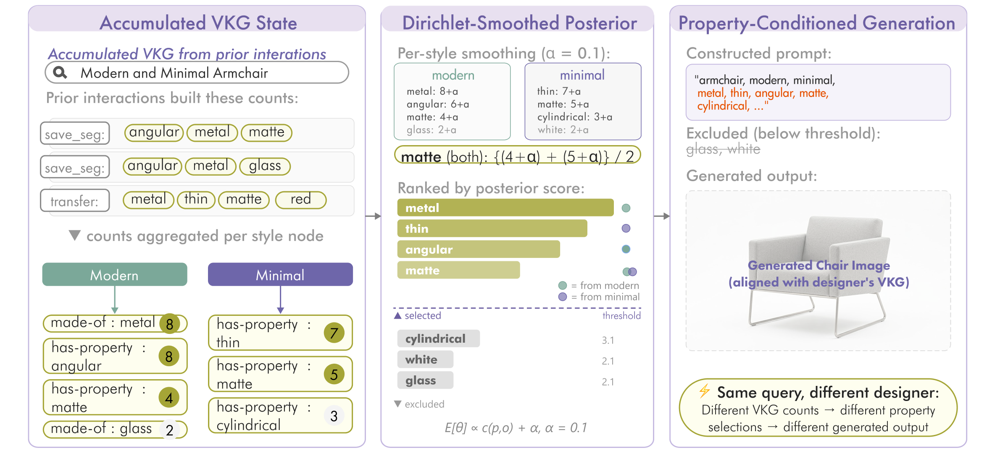

The pipeline
Five stages, from pixels to knowledge graph.
Each stage refines the semantic representation — segmentation, labeling, attribute extraction, triple construction, and post-processing.
Segmentation
Multi-granularity part extraction using Semantic-SAM, producing hierarchical masks with object/part labels (e.g., sofa-armrest, table-leg).
Segment Labeling
GPT-4o Vision analyzes each segment to assign semantic labels, understanding both the part identity and its role within the overall object.
Visual Attribute Extraction
Extract fine-grained properties including material (wood, metal, fabric), color, texture, shape characteristics, and functional attributes.
Triple Extraction
Build structured knowledge graph triples following VisualSem ontology: is-a, part-of, made-of, has-property, is-style-of, and more.
Post-Processing
Normalize properties, inject into the cognitive graph, and save VKG logs for analysis and generation tasks.
From image to Visual Knowledge Graph.
The full extraction process — from segmented parts to a densified graph of typed relations.

From graph to image: History-Based Injection.
Property-grounded generation and editing, driven by the accumulated knowledge graph — only the most relevant bindings are injected into the generator.
